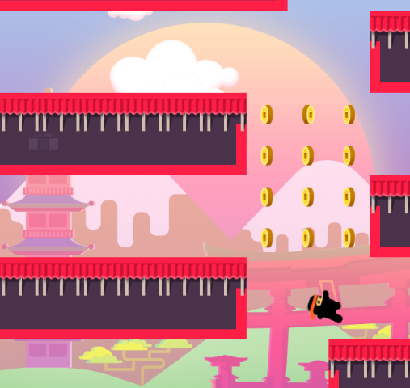

برنامه سازی پیشرفته
خانه
پروژه پایانی
برنامه سازی پیشرفته ترم 991
پروژه پایانی
پروژه های پایانی
نکات مهم
پروژه های پایانی حتما باید با استفاده از مفاهیم شیء گرایی انجام شود . در زمان تحویل API ها از شما اخذ خواهد شد.
استفاده از مفاهیم خارج از درس گفته شده به شرط تسلط به مطلب بلامانع است.
حتما در زمان تحویل پروژه یک فایل شامل توضیحات کامل پروژه ( توضیح خط به خط نیاز نمی باشد ) آماده کنید.
استفاده از ظاهر گرافیکی اجباری میباشد.
کپی بودن پروژه کاملا ملموس خواهد بود . در صورتی که پروژه کپی باشد نمره درس ، صفر منظور میگردد. لطفا طوری کپی کنید که ما متوجه نشویم ☺.
پروژه اول
فروشگاه آنلاین

پروژه دوم
بازی جاذبه نینجا